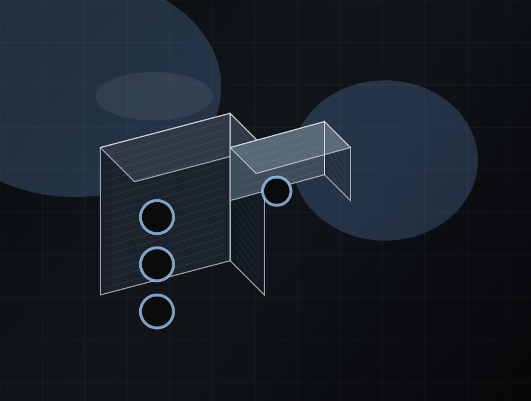
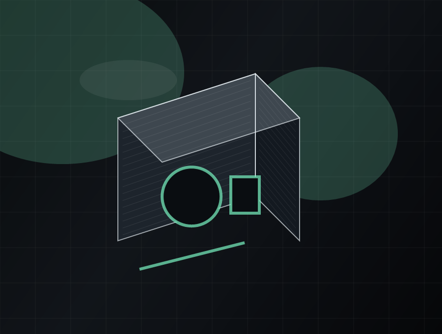
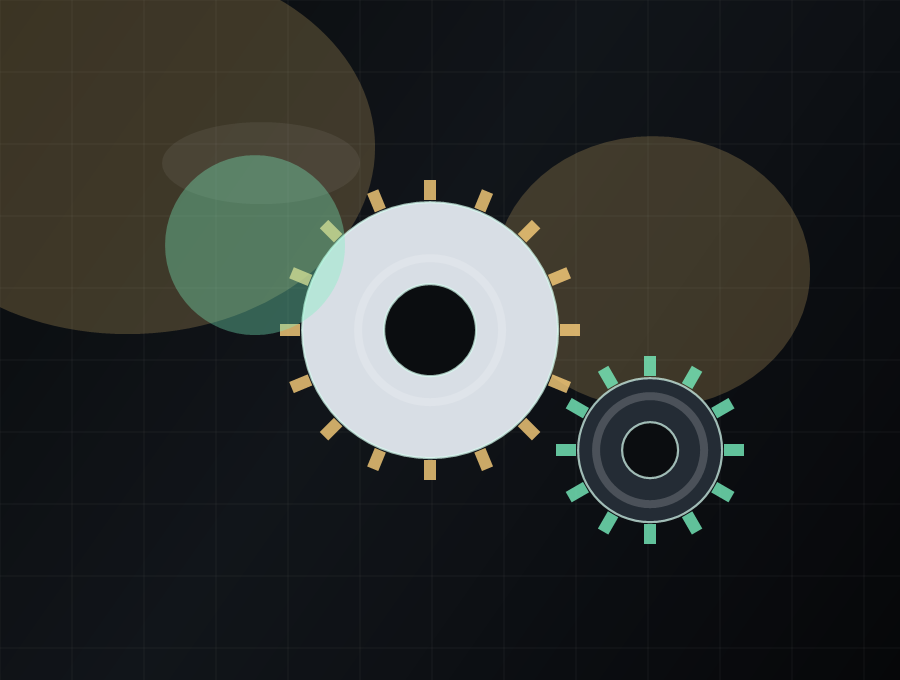

Custom tools and fixtures
Purpose-built jigs, guides, holders, and utility parts designed to solve practical workshop, assembly, or field-use problems.
Client work + in-house products
MaterialMatrix builds across a wide range of applications: custom problem-solving parts, replacement components for non-obsolete machinery, TPU seals, student keychains, and concept-to-product development.

Representative work
Every build starts with a real requirement: solve a problem, fix a machine, support a group, or turn an idea into a usable object.
Purpose-built jigs, guides, holders, and utility parts designed to solve practical workshop, assembly, or field-use problems.

Fit-critical components for non-obsolete machinery and equipment when the original part is worn, missing, or unavailable.

Flexible components such as pump seals and soft-touch functional parts engineered for the right balance of compliance and durability.

Custom pieces for clubs, student organizations, and events that need something physical, memorable, and made to order.

Projects that begin as rough requirements or sketches and move through design, prototyping, and validation before final output.
Once a part is proven, MaterialMatrix can produce low-volume batches for repeat orders, kits, or product launches.
Got a concept or a problem?